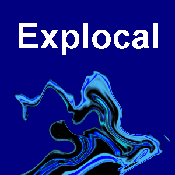

1 Descripción
Explocal es una aplicación informática que calcula las principales características teóricas de una mezcla explosiva (calor y temperatura de explosión, velocidad y presión de detonación, balance de oxígeno, composición de los productos de explosión…) siguiendo el método simplificado de la norma española UNE 31-002. Se desarrolló en C++ (Borland C++ 3.1 + Object Windows 1.0) para Windows 3.1 en 1996, como Proyecto Fin de Carrera de Enrique Pérez Herrero (E.T.S.I. de Minas de Madrid, especialidad Laboreo y Explosivos).
El repositorio conserva el código y los datos originales de 1996 tal cual, y reconstruye la memoria completa del proyecto (texto, fórmulas, figuras, tablas y anexos con el código fuente) como libro digital, publicado en GitHub Pages.
2 Historia del proyecto
- 1996 — Proyecto Fin de Carrera original: memoria en papel/Word y aplicación
EXPLOCAL.EXEen C++ para Windows 3.1. - 2015-2016 — Primer intento de modernización: exploración de los ficheros
*.DATcon R/ggplot, sin llegar a reimplementar el motor de cálculo. - 2026 — Reconstrucción completa: la memoria original se transcribe y corrige como libro Markdown/Quarto, publicado en GitHub Pages; en paralelo se reimplementa el motor de cálculo en Python. El código C++ de 1996 se conserva sin modificar como referencia histórica.
3 Estructura del repositorio
code/— código fuente C++ original de 1996 (Borland C++ 3.1 + Object Windows 1.0), datos, recursos y el ejecutableEXPLOCAL.EXEcompilado. Referencia histórica.site/— la memoria (PFC) reconstruida como libro Markdown/Quarto: capítulos numerados, índices de figuras/tablas y los anexos originales. Se publica como web en GitHub Pages y también se compila a PDF/DOCX/LaTeX con pandoc.docs/— documentos originales sin procesar (.DOC/LaTeX/Word de 1994-2015) de los que parte la reconstrucción desite/.catalog.json— índice machine-readable de todos los capítulos y anexos del libro (título, ruta y URL de cada uno) más los formatos disponibles (HTML/PDF/DOCX/LaTeX).
4 Estado actual
- ✅ Memoria completa reconstruida, corregida y publicada como libro web (HTML), y disponible en PDF/DOCX/LaTeX.
- ✅ Código y datos originales de 1996 preservados íntegros en
code/. - 🚧 Reimplementación en Python del motor de cálculo: en desarrollo.
5 Licencia
MIT © 1996 Enrique Pérez Herrero.
6 Cómo citar
Pérez Herrero, Enrique (1996). Proyecto de una aplicación informática
para el cálculo de las principales características teóricas de los
explosivos (Explocal). Proyecto Fin de Carrera, E.T.S.I. de Minas de
Madrid. https://enriqueph.github.io/EXPLOCAL/
DOI: 10.5281/zenodo.21306995